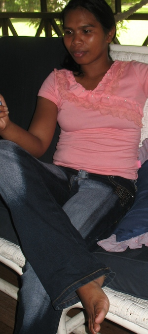

lambid1 
/lambid/
v_rt.
“intertwined”
vi.
for someone (egpeglambid, migpeglambid/impeglambid, agent, egpeg-) to cross their legs (when sitting or standing)
Layun dè egpeglambid si Usting ke egsasindeg
Usting always in cross legs when standing.
Eng. cross legs; cross-legged; legs cross; sit cross-legged
Online dict status: -
Usage level: M
vi.
for two things (egpekeglambid, nekeglambid, egpekeg-) to be intertwined or woven together, e.g., for two trees to grow into each other. They would then rub together in the wind. This causes a noise and the friction may start a fire.
Wrd.Gloss: intertwined
Nekeglambid ka kayu ne intubù diyè te marani te baley ney.
Near of our house, there was an intertwined tree.
Eng. intertwined; woven
Online dict status: -
Usage level: R
v.
for lots of things (eggunlambiran/inggunlambiran/miggunlambiran/piggunlambiran, eg<>an-guN-) to be criss-crossed together. (This word is often used to describe heavy traffic.)
Mananey key nekeuma te eggendiyaan ney diyè te Dabaw su ingunlambiran dè iya ka me terak diyè te dalan.
Its hard for us to be early in Davao for the road was on heavy traffic.
Eng. criss-crossed; interwoven; heavy traffic; traffic jam
Online dict status: -
Usage level: R
Updated by: RJH,RJH,TME,RJH,QDL
Last updated: 02/Feb/2010
This page last updated: 28-Dec-2019
Copyright © 2009-2014, Matigsalug Language Christian Association, Inc